This summary highlights the key discussions from the lecture video, with visual frames captured at important moments.
Video: https://www.youtube.com/watch?v=6OBtO9niT00
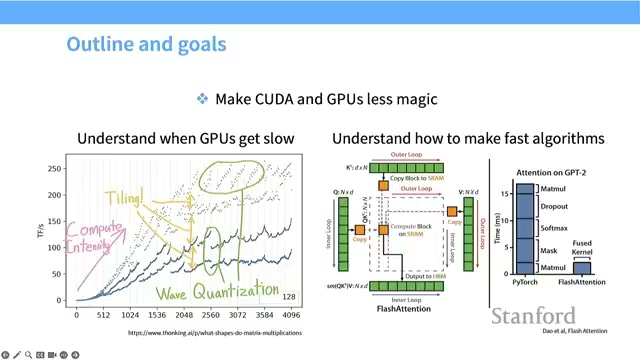
This section introduces GPUs and outlines the main goal of this lecture: to help you understand how GPUs work and how to speed up algorithms using them.
Understanding GPU hardware can seem challenging, but it is essential for making your models run faster.
This lecture draws on valuable external resources, including Horus Heath’s blog and Google’s TPU book, for deeper learning.
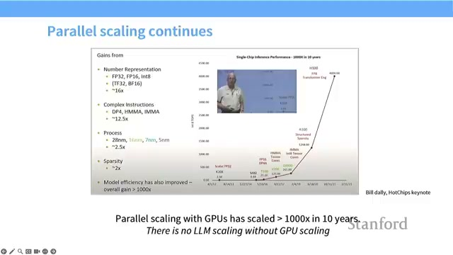
Training large language models requires faster hardware to handle the massive computational demands. As models grow in size and complexity, the need for efficient and powerful computing resources becomes critical.
Understanding the differences between CPUs and GPUs helps explain their roles in machine learning:
Because CPUs have largely stopped increasing in speed, the computing world has shifted towards parallel computing with GPUs. GPUs run many threads that execute the same instructions on different pieces of data simultaneously, making them ideal for the massive parallelism required in training large models.
In summary: The evolution from CPU-focused to GPU-focused hardware reflects the changing needs of machine learning workloads, emphasizing throughput and parallelism over single-task speed.
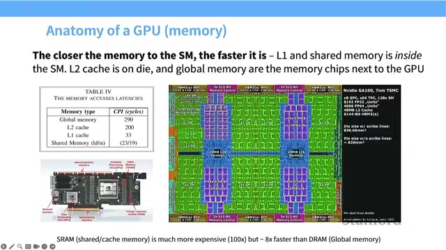
Graphics Processing Units (GPUs) are designed to handle massive parallel computations efficiently. At the heart of a GPU are Streaming Multiprocessors (SMs), which manage many smaller computing units called Streaming Processors (SPs). These SPs execute numerous threads simultaneously, enabling high-performance parallel processing.
Understanding the relationship between blocks, warps, and threads is essential for writing efficient GPU programs.
Additionally, GPUs feature multiple memory levels with varying speeds. Utilizing the fast memory located near SMs can significantly improve performance.
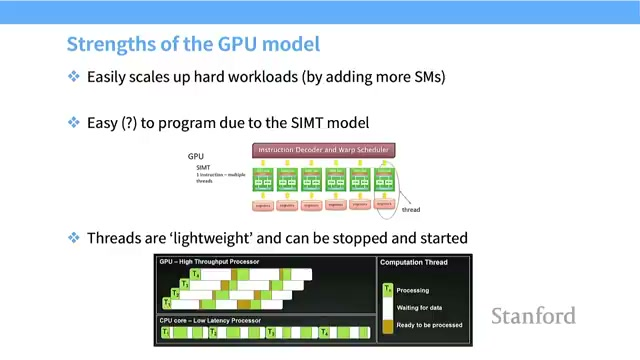
The memory hierarchy in a GPU consists of multiple layers of memory, each varying in speed and proximity to the compute units. Understanding these layers is crucial for optimizing GPU performance.
The speed of memory access directly affects GPU performance. Accessing memory that is physically closer to the compute units is faster, which is critical for maintaining high throughput.
Optimizing memory usage is key to achieving good GPU performance.
In summary, understanding and leveraging the GPU memory hierarchy enables developers to write programs that run faster and more efficiently by reducing memory access bottlenecks.
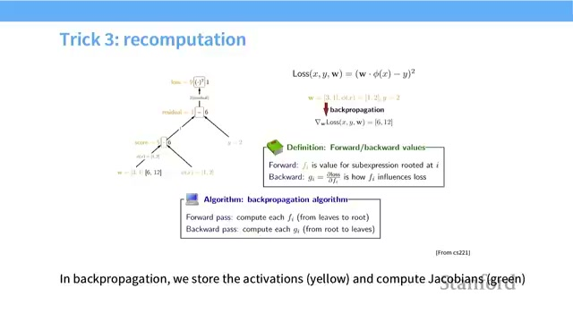
Tensor Processing Units (TPUs) are specialized hardware accelerators designed to speed up machine learning tasks, particularly those involving matrix multiplications. While they share some similarities with Graphics Processing Units (GPUs), TPUs are simpler in design and focus primarily on efficient matrix operations.
While TPUs may not offer the same flexibility as GPUs, they are highly optimized for deep learning tasks involving matrices, delivering superior performance in those specific areas.
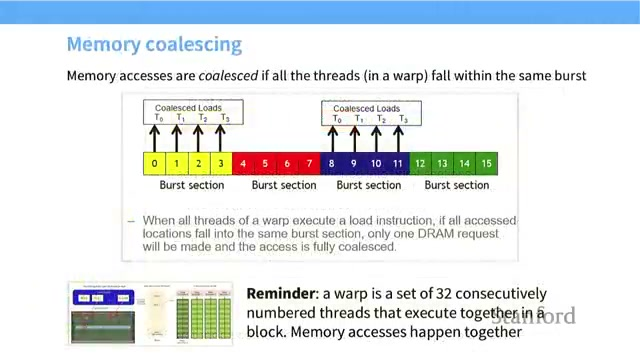
Graphics Processing Units (GPUs) achieve impressive performance scaling not by increasing clock speeds, but by adding more Streaming Multiprocessors (SMs), effectively increasing the number of cores. This architectural choice allows GPUs to handle massive parallel workloads efficiently.
The CUDA programming model enables developers to write programs that run thousands of threads in parallel on the GPU. A key concept is the CUDA Kernel, which is a function designed to execute simultaneously across many threads, each working on different pieces of data.
The GPU architecture is highly parallel, with many cores executing similar instructions simultaneously. Understanding how threads execute and the lightweight nature of these threads is crucial for writing efficient CUDA programs that fully leverage GPU capabilities.
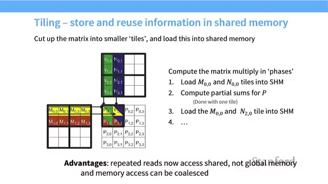
Graphics Processing Units (GPUs) have come a long way from their original purpose of rendering images. Over time, they evolved into powerful compute devices, especially optimized for matrix multiplication, a fundamental operation in deep learning.
To maximize performance:
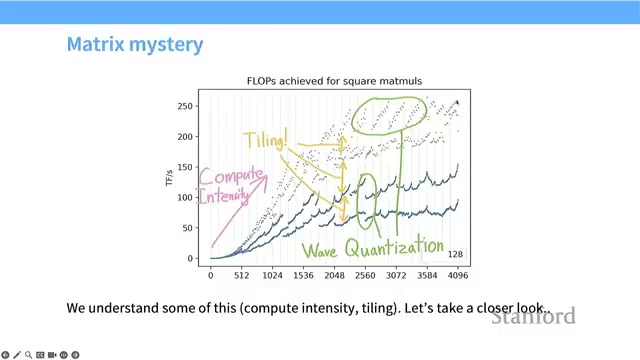
Over recent years, the compute power of GPUs has increased at a super-exponential rate, dramatically enhancing their ability to perform complex calculations. However, this rapid growth in computational capacity has not been matched by equivalent improvements in memory bandwidth and data communication speeds. As a result, memory access has become the primary bottleneck limiting overall GPU performance.
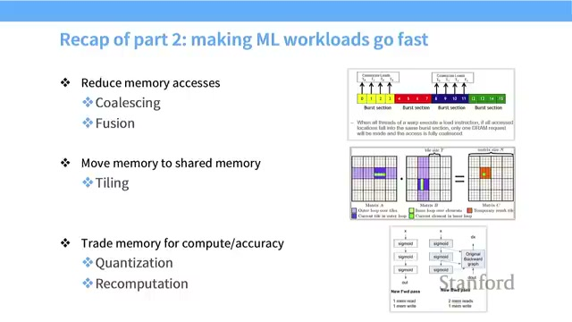
Graphics Processing Units (GPUs) are designed to handle complex computations efficiently by leveraging their unique architecture. Here's a quick recap of the essential features that make GPUs powerful tools for parallel processing.
Memory Hierarchy refers to the structured arrangement of memory types in a system, ordered from the fastest and closest to the compute units to the slowest and farthest. Efficient use of this hierarchy is critical for maximizing GPU performance.
Remembering these facts is crucial for a deeper understanding of GPU performance and how to optimize computations effectively.
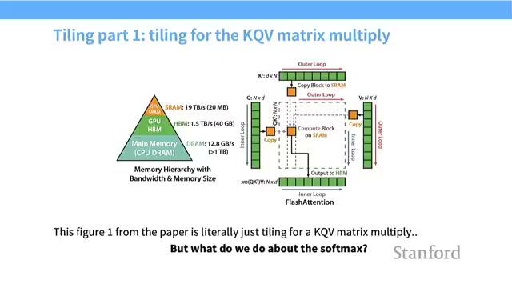
The Roofline Model is a powerful tool that visually represents the performance limits of a GPU. It helps us understand whether the speed of a GPU is constrained by memory bandwidth or by its compute capacity. This model provides valuable insights into optimizing GPU workloads for better efficiency.
Avoid unnecessary memory accesses as they can significantly slow down your GPU computations.
In upcoming sections, we will explore seven common GPU performance tips, beginning with how to handle conditionals effectively.
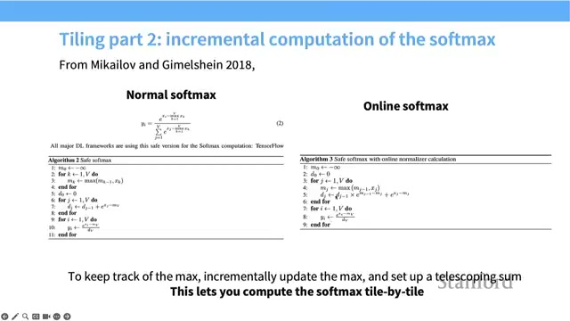
Graphics Processing Units (GPUs) operate using a unique execution model known as SIMT (Single Instruction Multiple Threads). This model allows a group of threads to execute the same instruction simultaneously but on different pieces of data, enabling massive parallelism and high performance.
While the SIMT model is highly efficient, it can suffer performance penalties when threads within a warp diverge due to conditional statements. Here's why:
By understanding and respecting the SIMT execution model, developers can write GPU code that maximizes parallel efficiency and minimizes costly performance bottlenecks caused by conditional branching.
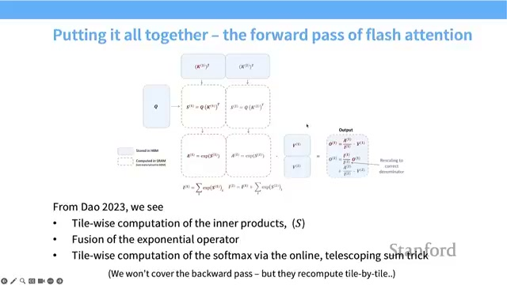
In modern GPU computations, using lower precision numbers such as FP16 instead of the traditional FP32 can significantly reduce memory bandwidth requirements and accelerate processing speeds.
Embracing lower precision techniques is a powerful strategy to optimize GPU performance, but it requires thoughtful application to maintain model quality.
Operator Fusion is a powerful technique that combines multiple GPU operations into a single kernel. This approach helps to minimize slow memory reads and writes by reducing the number of times data is transferred between global memory and the GPU’s processing units.
In naive GPU implementations, intermediate results are often written back to global memory between operations. This frequent memory access can cause significant slowdowns because global memory is much slower compared to registers or shared memory.
By fusing operations:
Recomputation is a technique where values are recalculated instead of being stored and fetched from slower memory. This approach trades additional compute resources for reduced memory usage, which can be beneficial in certain computational scenarios.
Efficient memory access is crucial for optimizing GPU performance. When threads access adjacent data in bursts, memory operations become significantly faster. This blog post explores GPU memory burst mode and the importance of memory coalescing in achieving high-speed data processing.
Memory access patterns have a direct impact on GPU speed and efficiency. Consider the following:
In summary, understanding and leveraging GPU memory burst mode along with memory coalescing techniques can dramatically enhance the speed and efficiency of your GPU applications.
Tiling is a powerful technique used to optimize matrix multiplication by breaking large matrices into smaller, manageable blocks called tiles. These tiles are loaded into shared memory, which is a fast memory located close to compute units, allowing computations to be performed efficiently before moving on to the next tile.
In summary, tiling is essential for reducing costly global memory accesses and maximizing the efficiency of matrix multiplication operations.
When working with matrix computations on GPUs, tile size and memory alignment play a crucial role in performance optimization. This section explores the common problems that arise when tiles do not perfectly divide matrix sizes and emphasizes the importance of aligning tiles with memory burst sections.
When working with GPU computations, you might notice sudden drops in speed as you increase matrix sizes. This phenomenon often occurs when the number of tiles exceeds the number of Streaming Multiprocessors (SMs), forcing sequential execution and reducing overall performance.
Understanding and managing the relationship between tiles and SMs is crucial for maximizing GPU performance and avoiding frustrating slowdowns.
Improving GPU performance hinges on reducing memory overhead and enhancing compute efficiency. This summary highlights key strategies to help you optimize your GPU workloads effectively.
Memory movement is often the primary bottleneck in GPU workloads. Therefore, it is crucial to optimize data flow carefully to achieve better performance.
Gaining a deep understanding of hardware details alongside these strategies will empower you to build faster and more efficient models.
Flash Attention is a cutting-edge GPU algorithm designed to accelerate transformer attention by smartly combining several advanced techniques such as tiling, recomputation, and efficient memory utilization.
In summary, Flash Attention represents a powerful fusion of GPU techniques that deliver faster and more memory-efficient transformer attention, making it a valuable advancement in deep learning performance optimization.
Flash Attention introduces an innovative way to compute the softmax function efficiently by leveraging an online algorithm that processes data in tiles rather than requiring the entire matrix at once.
The softmax function transforms a set of numbers into probabilities by exponentiating each number and then normalizing by their sum. This is a fundamental operation in many machine learning models, especially in attention mechanisms.
Online Softmax is a method that incrementally computes softmax terms by processing data tile by tile. Instead of waiting for all data, it:
In summary, Flash Attention's online softmax algorithm offers a powerful solution to the memory challenges of traditional softmax computations by processing data incrementally and efficiently.
In training large neural networks, especially transformers, managing memory efficiently is crucial. The backward pass—where gradients are computed for network updates—can be particularly memory-intensive when storing intermediate results like softmax matrices.
Storing the full softmax outputs during the backward pass requires memory proportional to the square of the sequence length (n2), which quickly becomes prohibitively large for long sequences.
Instead of storing these large intermediate matrices, Flash Attention employs a strategy of recomputing activations tile by tile during the backward pass. This approach is similar to the general recomputation technique used in deep learning to trade compute for memory.
Recomputation allows training of large transformers to be memory feasible without sacrificing speed. By avoiding the storage of massive softmax matrices, Flash Attention enables efficient gradient computation even for very long sequences.
In summary:
The closing section of the lecture emphasizes that hardware knowledge is essential for pushing the boundaries of large language models. Among the challenges faced, optimizing memory movement stands out as the primary hurdle to achieving better performance.
Generated automatically from lecture transcript and video analysis.